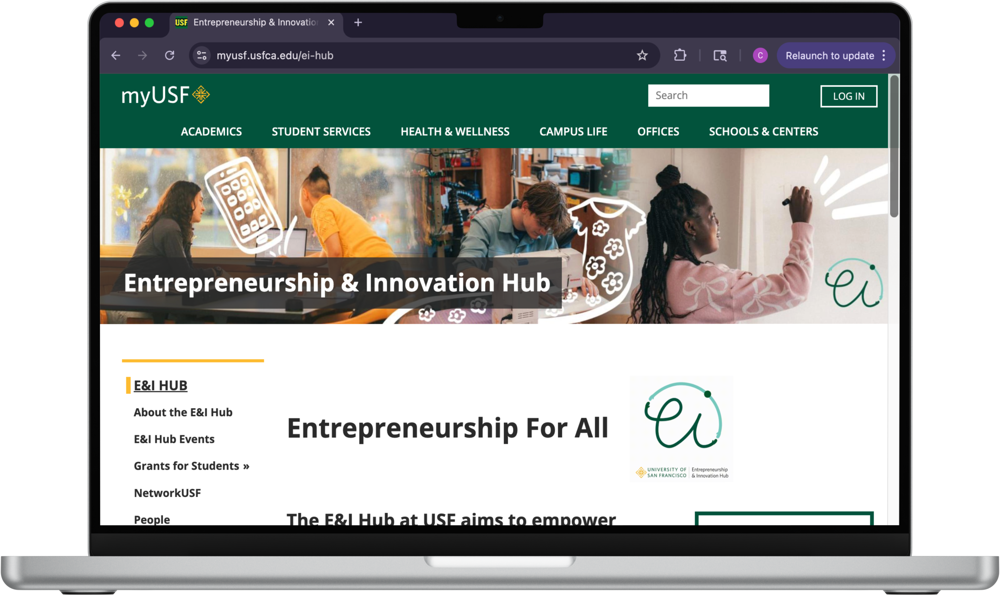
The Entrepreneurship and Innovation Hub is an on-campus program made by students, for students. The program aims to empower all students, regardless of background, knowledge, and experience, with entrepreneurial skills and opportunities.
I was a part of the UX and Web Design Team. Alongside a team of 3 other students, we created the website for the E&I program. Our responsibilities included copy writing, web design, user research, user testing, and incorporating user feedback into design iterations.
Figma, Drupal, Google Forms
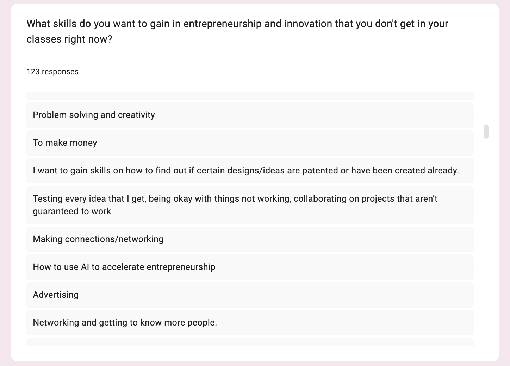
First, we wanted to find out what "entrepreneurship" meant for USF students. After asking students, we gathered that everyone associated entrepreneurship exclusively with the business school and major.
Then, we wanted to find out what "entrepreneurship for all" meant for USF students. We conducted a survey to over 120 students that introduced the program to everyone
Through this, we discovered what entrepreneurial skills they wish to gain through the school as well as what obstacles would prevent one from joining this program. We also gathered what students thought about microgrants and how likely they were to apply to them.
Following this research, we brainstormed with the Branding and Storytelling Team to figure out how we're going to make the Entrepreneurship and Innovation program known that it was for everyone, not just business majors.
As part of the Web Design Team, we incorporated inclusive language in our copy writing, emphasizing the fact that anyone can be entrepreneur, throughout our website
We created low fidelity and high fidelity wireframes of the website using Figma. Prior to building the website, we took an accessibility course and attended web training provided by the school. Then we incorporated our actual designs to the live site.
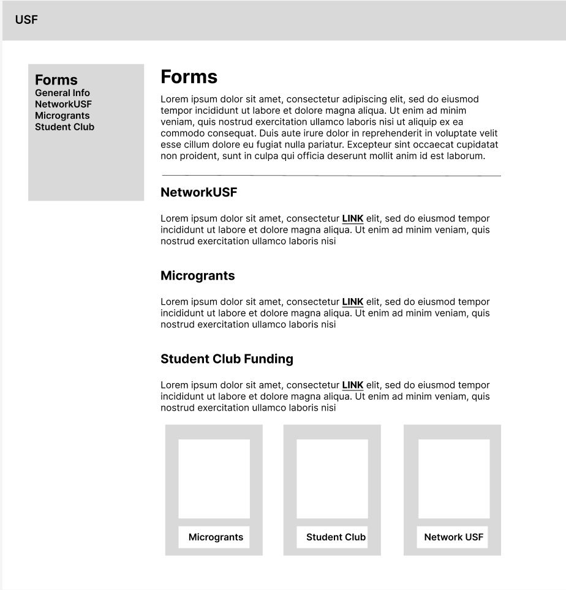
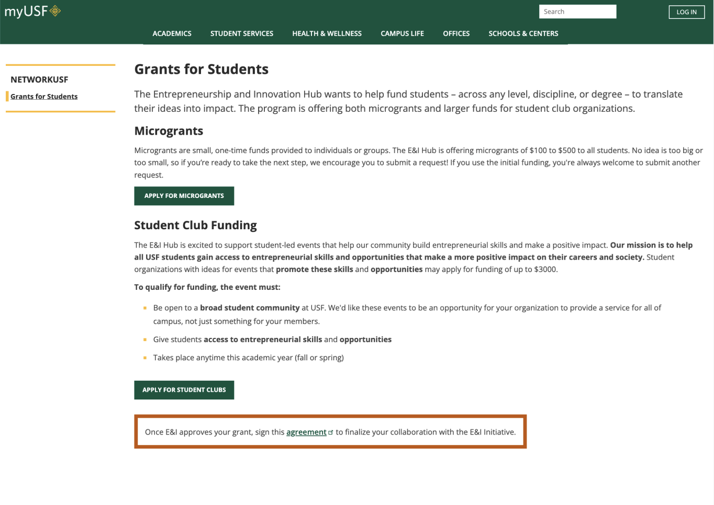
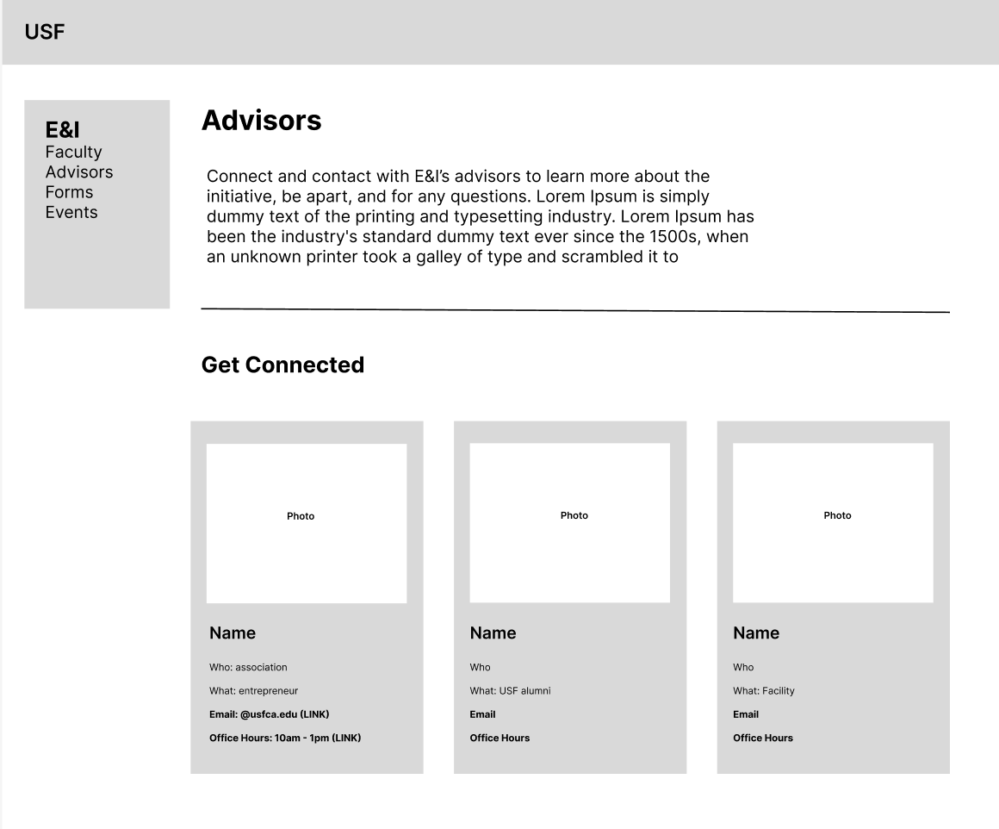
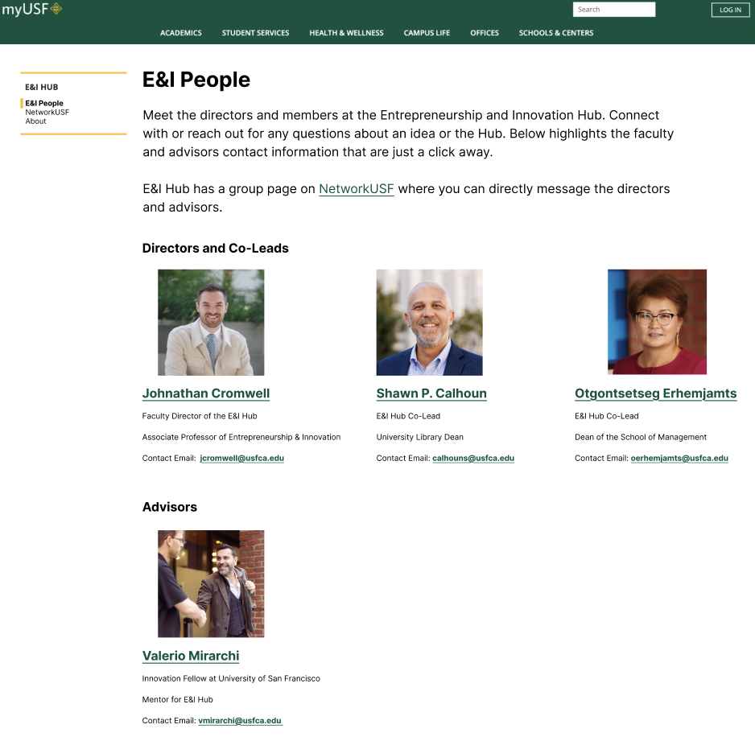
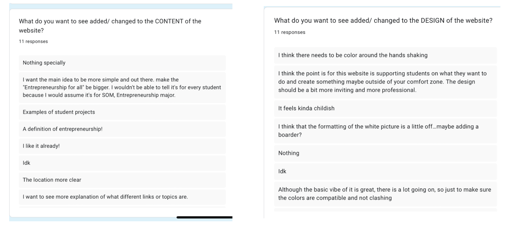
After the website went live, we designed a survey for students to fill out to see what was doing well and what needed improvements. We also performed user interviews with students, asking them to go over our website on mobile and desktop to receive first impressions and overall feedback.
After numerous presentations with our stakeholders, surveys, and user interviews we gathered all our feedback to create the final website for the Entrepreneurship and Innovation Hub at USF.
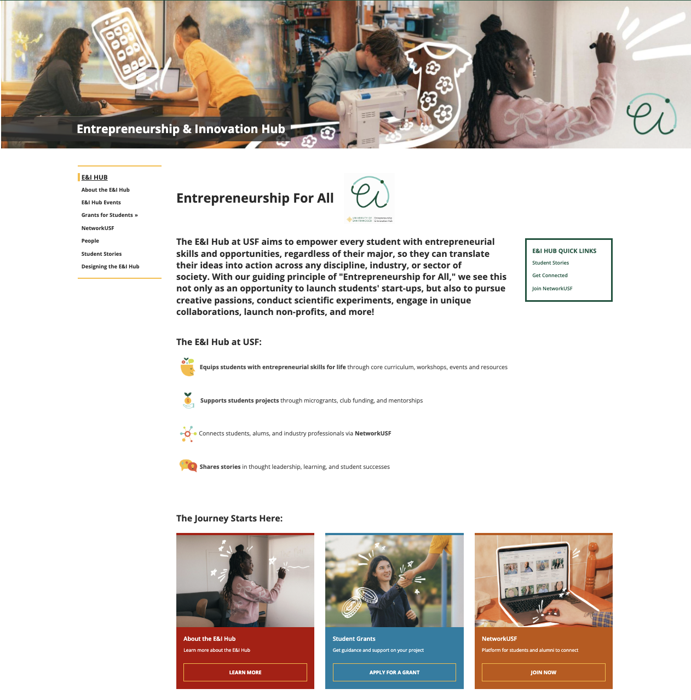
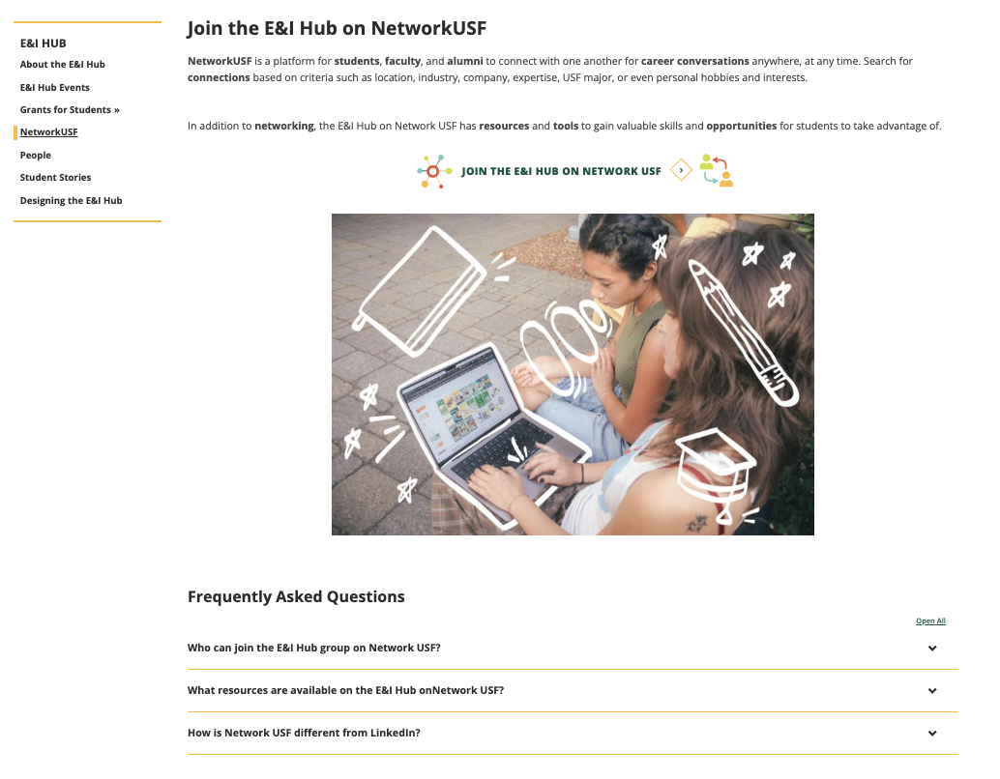
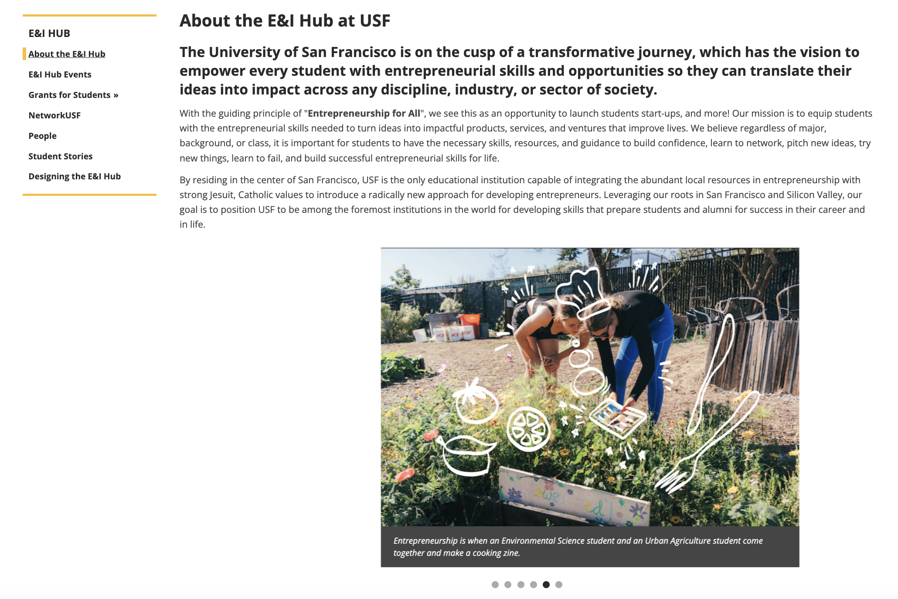
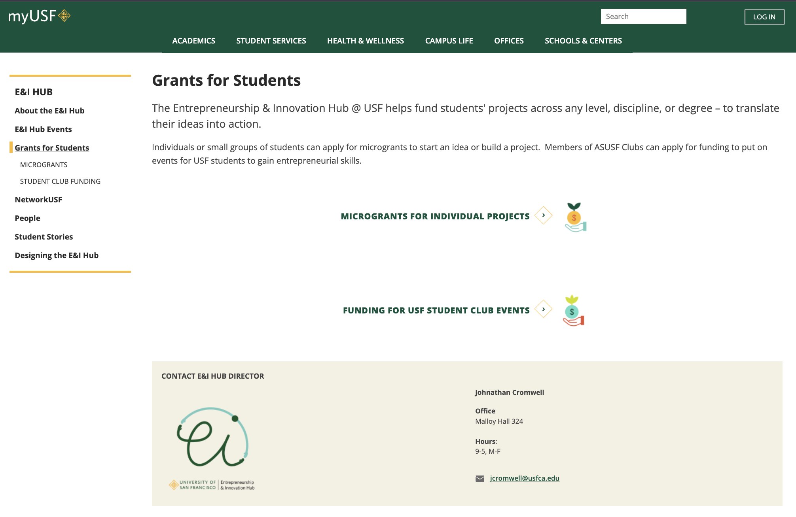